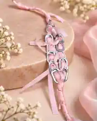
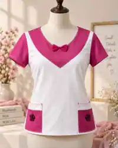
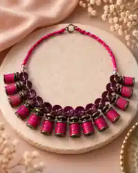
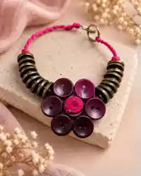
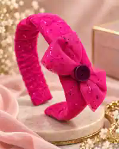
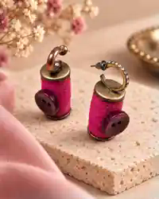

Ribbon Pull-Tab BraceletClick to viewN$60
Fashion that Heals. Fabric that Remembers.
A sustainable fashion story of remembrance, strength and hope—turning overlooked materials into wearable pieces that raise awareness, create value and build a platform for community impact.


Every stitch is a story.
Every pink piece holds a life, a fight, a name we refuse to forget.
For the ones we lost — we honor you.
For the ones still fighting — we celebrate you.
For the ones who come next — we protect you.
We turned grief into garments.
Silence into statements.
Pain into purpose.
Sustainable fashion, with soul.
A runway that raises awareness.
A collection that raises funds.
A movement that raises hope.
Because healing doesn’t always look like medicine.
Sometimes it looks like a dress you wear with pride.
Sometimes it looks like a shirt that starts a conversation.
Sometimes it looks like pink threads, holding us all together.
This is not just fashion.
This is remembrance you can wear.
Pink Threads brings sustainable design, emotional storytelling and a clear path to social impact together in one growing fashion brand.
Customers choose a wearable piece while supporting remembrance, survival and hope.
Buttons, trims, textile remnants and other reusable materials become distinctive small-batch pieces.
Income, events and future partnerships create room for awareness, fair work and community support.
The model starts small and can grow through collections, events, retail opportunities and collaborations.
Recover textile remnants, trims, buttons and other materials that can be given a new life.
Turn them into pink garments and accessories with a clear remembrance identity.
Present the collection through fashion events, pop-ups, retail opportunities and this digital catalogue.
Reinvest while building measurable support for people and communities affected by cancer.
Six signature pieces bring the Pink Threads identity to life. Click an item to see it larger and read its story.




The collection creates a commercial base while events and future partnerships expand reach. Growth and impact are designed to reinforce each other.
Students, young professionals, conscious consumers, local-design supporters and people connected to the cancer journey.
Designers, tailors, retailers, textile suppliers, venues, media, mentors and organisations aligned with our purpose.
The website anchors the story and collection, with future digital campaigns, enquiries and online ordering as the audience grows.
We set clear targets, record progress and build trust by showing what is actually achieved.
Track materials sourced, reused and incorporated into products so environmental progress can be reported with evidence.
Create selected income and skills opportunities for people affected by cancer as the venture grows.
Target support for two community initiatives through future fundraising and partnerships.
Each step is supported by real customer response, stronger partnerships and measurable results.
Present the six signature pieces and establish the brand story.
Collect customer feedback, enquiries and early sales data.
Expand products, events and collaborations while tracking impact targets.
Grow retail and digital reach without losing the purpose behind the brand.
We are looking for partners who can strengthen production, visibility, market access and the social impact of Pink Threads of Remembrance.